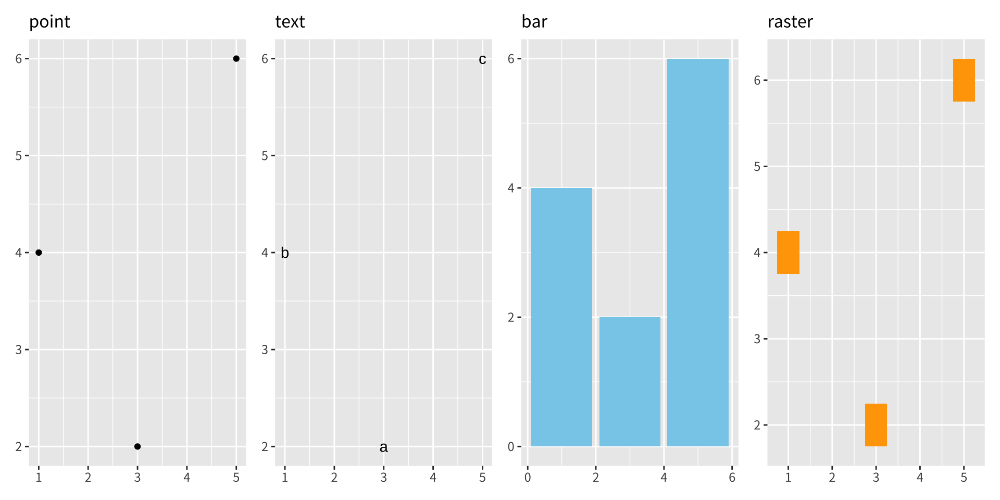
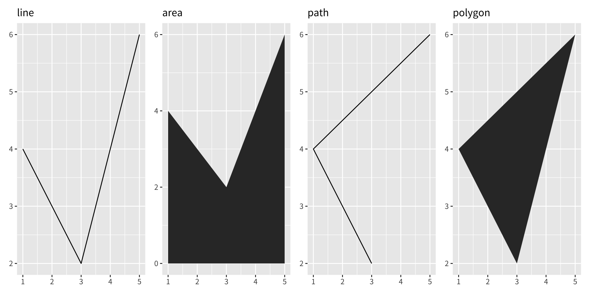

資料分析
第三章：個別 geoms
實踐大學
2026-06-05
基本圖形類型
基本圖形類型
這些 geoms 是 ggplot2 的基本構件。它們本身就很有用，但也用來建構更複雜的 geoms。這些 geoms 大多對應到一種有名稱的圖：當某個 geom 單獨用於一張圖時，那張圖就有一個特別的名稱。
這些 geoms 每一個都是二維的，且同時需要 x 與 y 美學。它們全都理解 colour（或 color）與 size 美學，而有填色的 geoms（bar、tile 與 polygon）也理解 fill。
geom_area()畫出面積圖（area plot），也就是一條填到 y 軸的折線（填色的線）。多個群組會彼此堆疊。geom_bar(stat = "identity")製作長條圖（bar chart）。我們需要stat = "identity"，因為預設的 stat 會自動計數（所以本質上是一維 geom，見第 5.4 節）。identity stat 則讓資料維持不變。位於相同位置的多個長條會彼此堆疊。geom_line()製作折線圖（line plot）。group 美學決定哪些觀測值會被連起來；更多細節見第 4 章。geom_line()由左至右連接點；geom_path()類似，但依點在資料中出現的順序連接。geom_line()與geom_path()也都理解 linetype 美學，它把類別變數映射到實線、點線與虛線。geom_point()產生散佈圖（scatterplot）。geom_point()也理解 shape 美學。
geom_polygon()畫出多邊形（polygons），也就是填色的路徑。多邊形的每個頂點在資料中都需要獨立的一列。在繪圖之前，把一個多邊形座標的資料框與資料合併，往往很有用。第 6 章針對地圖資料更詳細地說明這個概念。geom_rect()、geom_tile()與geom_raster()畫出矩形。geom_rect()由矩形的四個角xmin、ymin、xmax與ymax來參數化。geom_tile()完全相同，但以矩形的中心及其大小x、y、width 與 height 來參數化。geom_raster()是 geom_tile() 的快速特例，當所有方塊大小相同時使用。geom_text()為圖加上文字。它需要一個提供顯示文字的label美學，並有許多參數（angle、family、fontface、hjust與vjust）控制文字的外觀。
準備資料


練習
- 對於以下每一種有名稱的圖，你會用哪些 geoms 來繪製？
散佈圖
折線圖
直方圖
長條圖
圓餅圖
geom_path()與geom_polygon()有什麼差別？geom_path()與geom_line()又有什麼差別？繪製
geom_smooth()時用到哪些低階 geoms？geom_boxplot()與geom_violin()呢？
致謝
版權聲明。 本教材改編自 ggplot2: Elegant Graphics for Data Analysis (3e)。所有權利均由原作者與出版者保留。
僅供非商業用途。 本教材嚴格限定用於教育目的，不得用於商業獲利。
適當標註出處。 任何對本教材的重製、散布或使用，都必須適當標註原始出處。
參考文獻

ggplot2: Elegant Graphics for Data Analysis